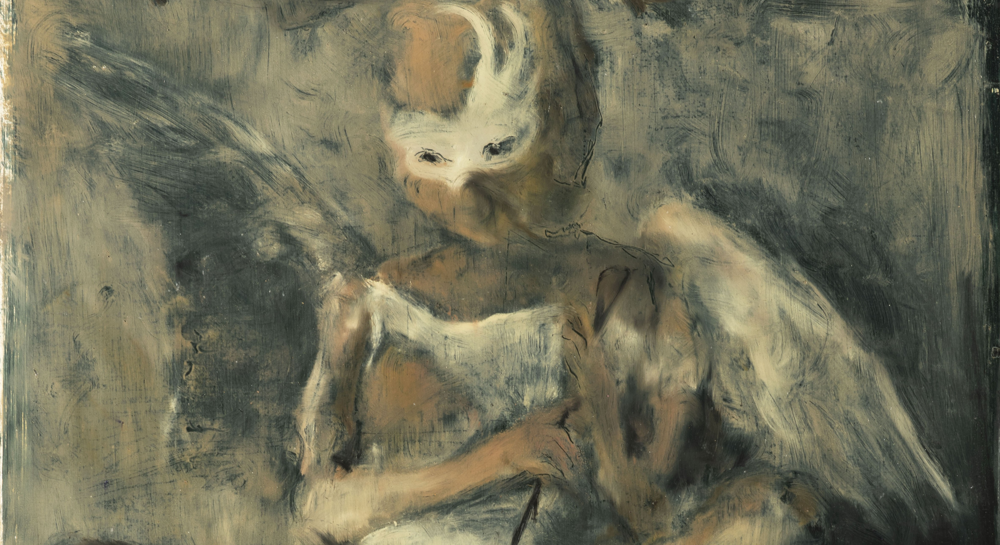
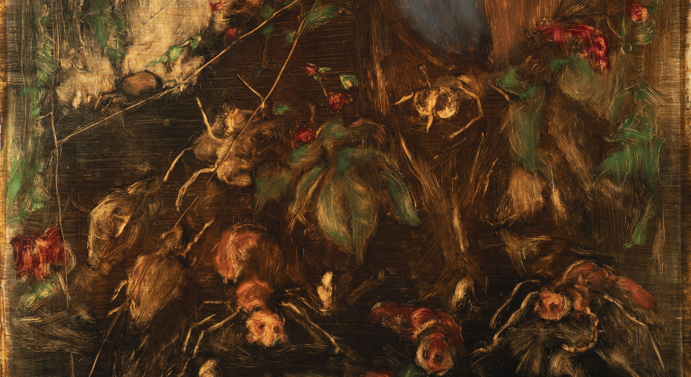
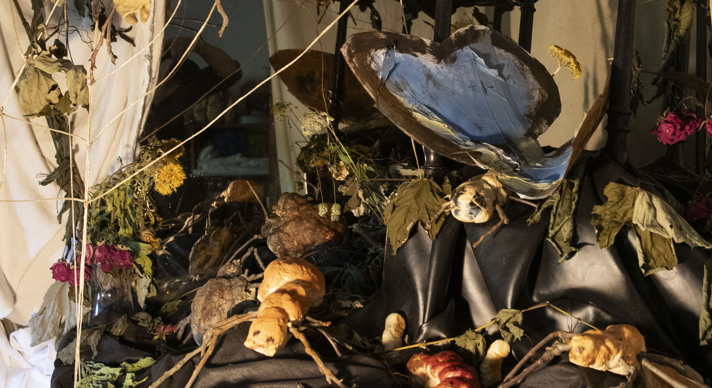
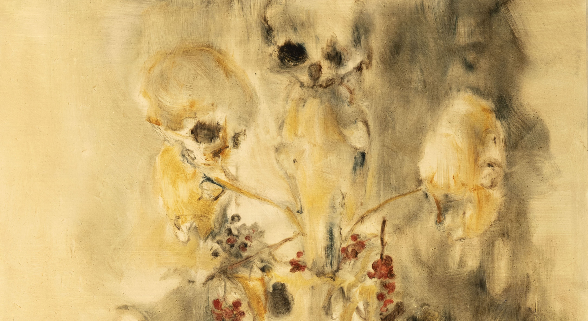

Martin Mrkva
Již působivá nezapomenutelná diplomová práce Martina Mrkvy v roce 2017, kdy vytvořil jakési scénické dioráma znázorňující bitvu rohlíků a housek, jej představuje jako umělce bez kompromisu. Martin maluje technikou olejomalby, svobodu a rozmach gesta mu dovoluje papír jako podklad. Pohybuje se v několika tematických okruzích, do kterých v čase porůznu znovu vstupuje. Téměř všudypřítomná je u něj figura, kterou na jeho obrazech nacházíme jak explicitně, tak skrze quazimodely, představované třeba i oněmi rohlíky. Se stejnou vášní, jakou se vyznačuje jeho přístup k figuře, se věnuje i zátiším, tematizujícím krásu a pomíjivost bytí ve hmotě skrze květiny i „kosterní“ stafáž. Charakteristický je pro něj téměř barokně expresivní výraz a při pohledu na některé jeho kompozice se do mysli vkrádá Tizianův kroměřížský Marsyas. Martinova tvorba, to je sama otevřenost, skrze temné akordy prodírající se světlo. Tragédie i vzkříšení. Setkání světla a temnoty, kdy jedno bez druhého přestávají mít smysl.
Martin Mrkva (*1989) studoval na Střední uměleckoprůmyslové škole v Bechyni (2006-2010) a pokračoval na Akademii výtvarných umění v Praze v Ateliéru grafiky II, škole Vladimíra Kokolii (2011-2017), kde je kladen důraz na experiment a otevřenost myšlenky. Již jeho působivá a nezapomenutelná diplomová práce (2017) jej představuje jako umělce rozkročeného mezi Apollonem a Marsyasem. Martin Mrkva žije a tvoří v Kralupech nad Vltavou.




Martin Mrkva
Martin Mrkva's impressive and unforgettable diploma work in 2017, when he created a scenic diorama depicting a battle of bread rolls, introduced him as an uncompromising artist.
His work is characterized by specific humor, narrative playfulness, and a deep sense for spatial installation, opening new layers of meaning within the gallery spaces of Jilská 14.